Generated: 2026-06-15T18:47:22.919Z
Ready for small human testing
Prompt Life is under development. The single badge remains under construction, pending human review, and not issued.
| Command | Status |
|---|---|
npm run typecheck | pass |
npm run build | pass |
npm run build:pages | pass |
npm run audit:answers | pass |
npm run audit:checkpoints | pass |
npm run audit:question-clues | pass |
npm run audit:learner-copy | pass |
npm run audit:learner-leaks | pass |
npm run audit:language | pass |
npm run audit:visual-assets | pass |
npm run audit:visual-aids | pass |
npm run audit:visual-overflow | pass |
npm run audit:word-wrap | pass |
npm run audit:exercises | pass |
npm audit --audit-level=high | pass |
| Check | Status | Detail |
|---|---|---|
| stage navigation links | pass | 8 stage buttons; horizontal overflow 0px. |
| checkpoint wrong-answer no-reveal | pass | Wrong choice showed targeted feedback and did not reveal the correct answer. |
| checkpoint multi-question sequence | pass | Before: 1 of 2 questions; after: 2 of 2 questions. |
| badge status language | pass | Badge page checked for under construction, pending human review, and not issued language. |
| rendered process-language scan | pass | No Tiny Interaction, magic, debug notes, placeholder asset text, or process-language leaks in captured learner screens. |
| 390px overflow and bottom nav | pass | No horizontal overflow or bottom-nav coverage found in captured 390px screens. |
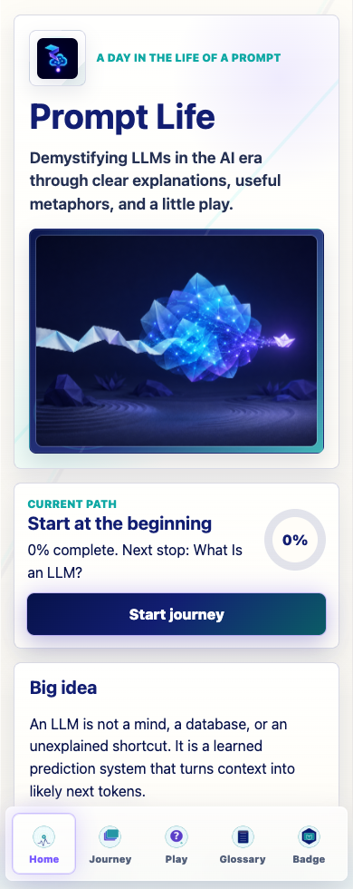
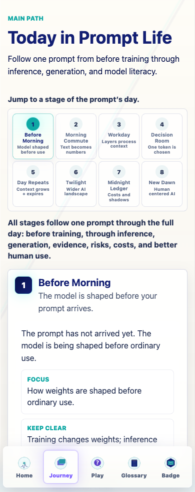
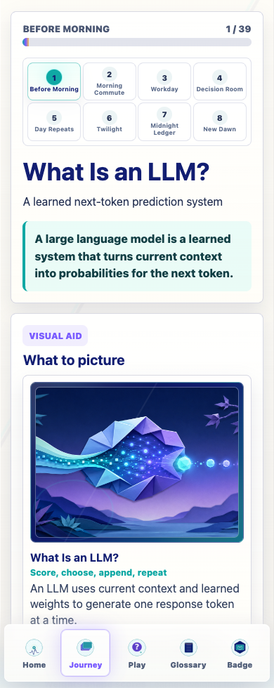
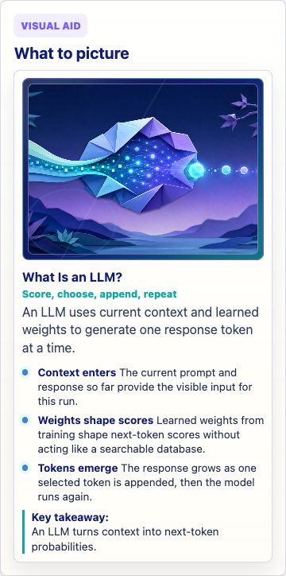
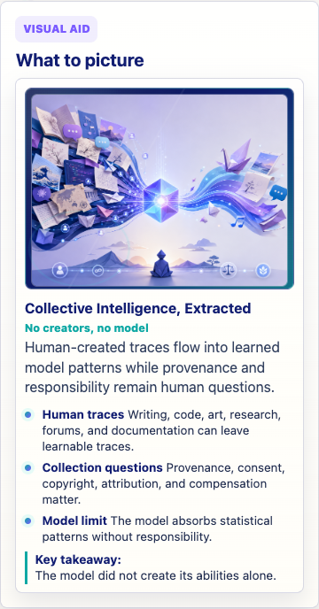
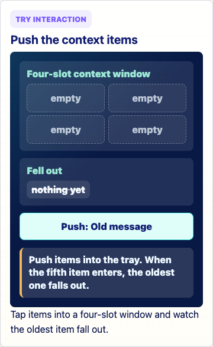
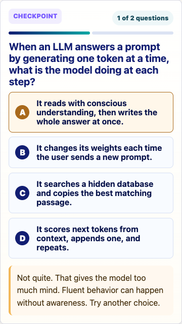
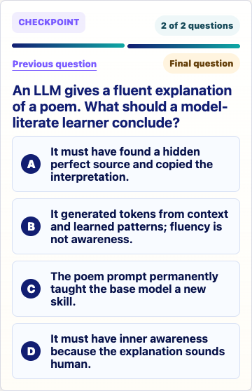
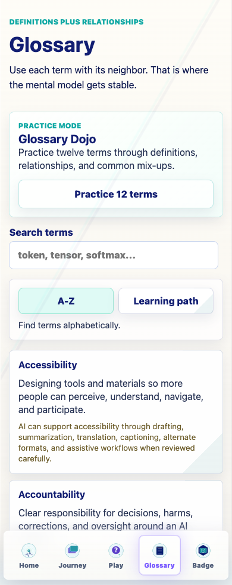
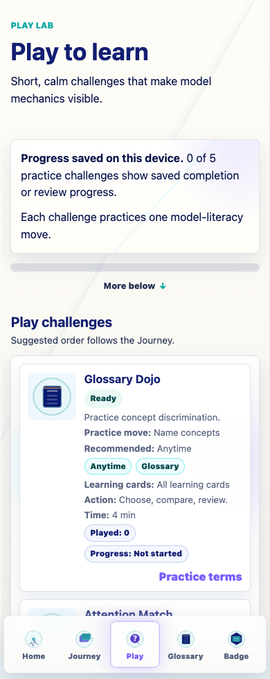
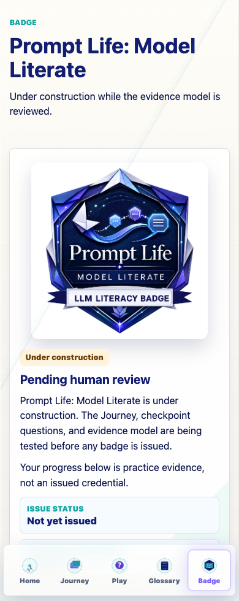